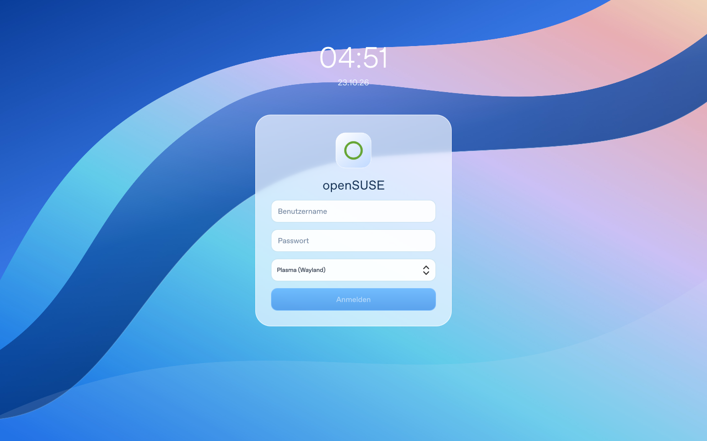
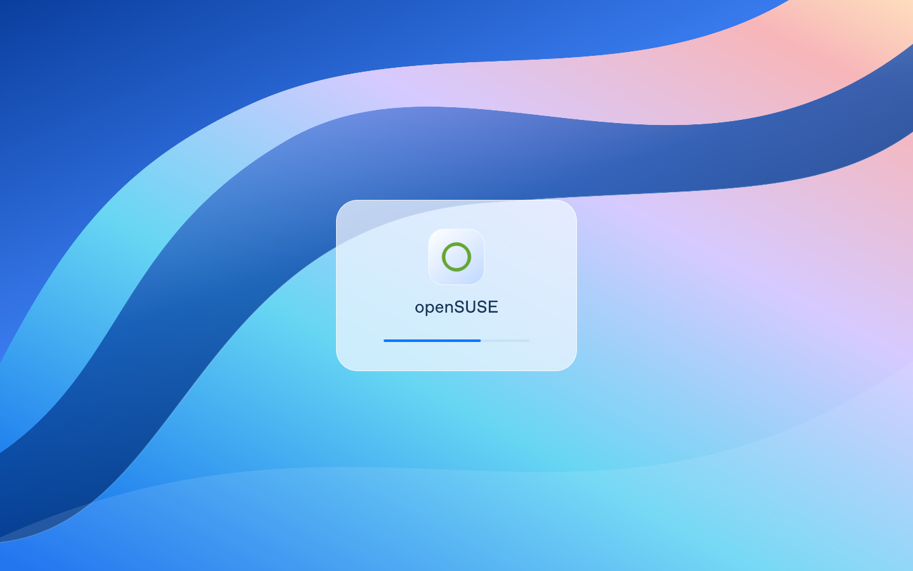

Native QtQuick-Darstellung der enthaltenen Komponenten. Keine Screenshots einer laufenden Plasma-Sitzung.


Die Vorschau verwendet das originale Ringmotiv dieses Pakets. Der Installer verwendet stattdessen dein installiertes openSUSE-Originalsymbol.